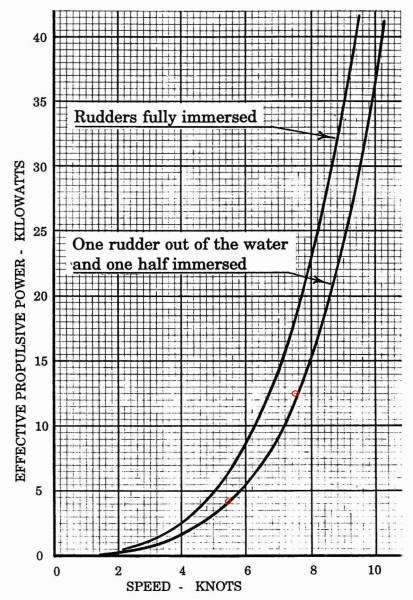
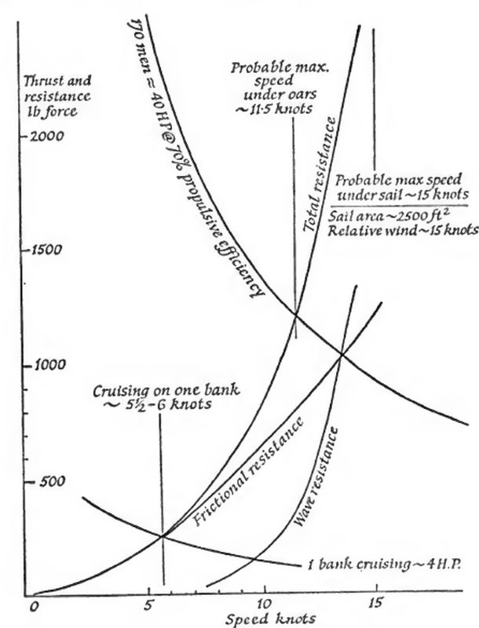
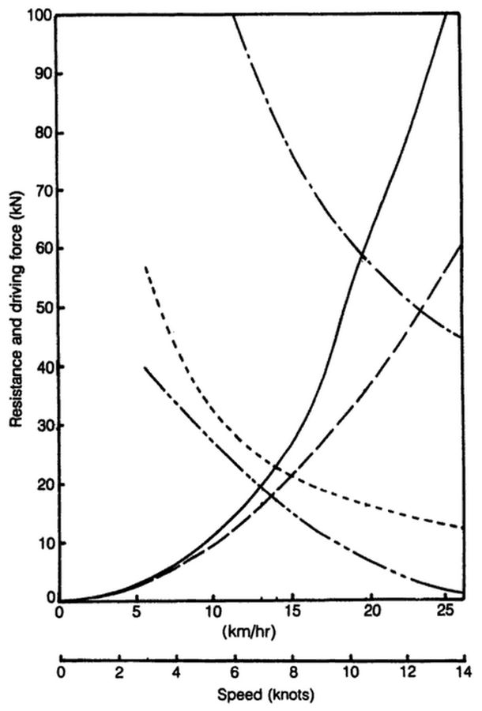
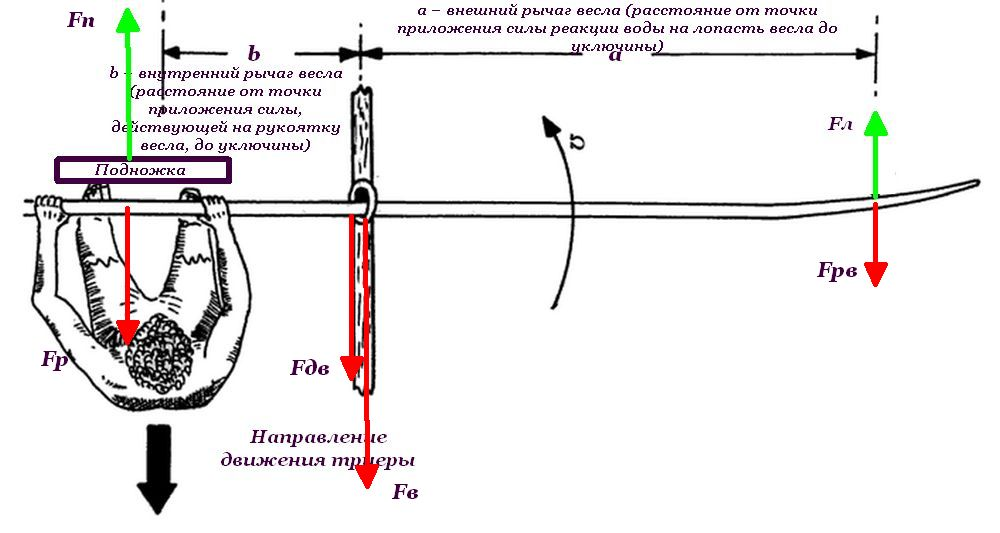

Скорость триеры: механика работы весла и затраты энергии
Αγεωμέτρητος μηδεὶς εἰσίτω
Перевод эпиграфа известен многим. «Да не войдет не знающий геометрии». Согласно преданию, именно этот девиз находился над входом в Академию Платона. Смысл его глубже очевидного значения. Знание геометрии должно предшествовать философии, если под философией понимать строгую науку, а не пустые разглагольствования «понемногу обо всем». Мы не планируем подниматься до высот мудрости Платона, но и в нашем сугубо частном предмете не обойтись без точного знания, если мы хотим понять эволюцию гребных кораблей, а именно этим мы в данный момент занимаемся.
Сейчас мы говорим о достижимых скоростях при ходе античной триеры на веслах, поэтому несколько теоретических абзацев, небольшое математическое отступление, представляются необходимыми.
В последнем рассказе мы пришли к заключению, что крейсерская скорость античной триеры на достаточно протяженных переходах составляла в среднем 7-8 узлов. Скорость ее реплики Olympias – 5,4 – 5,77 узла. Казалось бы, невелика разница. Однако взглянем на график зависимости потребной эффективной мощности от скорости триеры.

Скорость в 5,5 узла при использовании весельного движителя требует мощности 4,2 Квт, в то время как для достижения скорости в 7,5 узла необходима мощность 12,5 Квт. В три раза больше! Если гребцы на Olympias на пределе сил добились скорости хода 5,5 узла, смогут ли они УТРОИТЬ свои усилия и поддерживать их на протяжении всего перехода? Отрицательный ответ очевиден.
Были проведены теоретические расчеты на основе общих положений гидродинамики (Landels, 1978; Cotterell и Kamminga, 1992), которые показали, что предельные значения достижимой максимальной скорости для античной триеры – 14 узлов, а продолжительной крейсерской скорости – 7,6 узла. Причем Ланделс вел расчет для гипотетического корпуса античной триеры, смачиваемая поверхность которого равнялась 92,8 м2, а Коттерель и Камминга – для корпуса реплики Olympias, со смачиваемой поверхностью 118 м2. Выше поднять скорость такого корабля не позволяют законы природы. При проведении этих расчетов принималось допущение, что гребцы Древней Греции обладали такими же физическими данными, как и средний современный здоровый человек (не специально тренированный атлет). Это давало возможность гребцу триеры развивать мощность около 1/3 л.с. (245 вт) за короткий период и около 1/10 л.с.(73,5 вт) на протяжении неопределенно длинного периода. Естественно, часть этой энергии рассеивалась без пользы для движения триеры: коэффициент полезного действия весла не удается сделать выше 75% даже с привлечением современной продвинутой науки. Допустим, вместе с Ланделсом, что к.п.д. весла афинской триеры равнялся 70% (явно завышен, но для расчета верхней границы эффективности гребцов на триере подойдет). Предполагая, что задействованы все 170 гребцов триеры, получим максимальную эффективную движущую мощность экипажа триеры 1/3х170х0,7 ≈ 40 л.с. или (грубо) 30 киловатт.
Построив соответствующие графики, Ланделс получает значения для максимальной скорости триеры на веслах ок. 11,5 узлов, а для крейсерской скорости при экономном продолжительном ходе 5,5–6 узлов.

Примерно к таким же результатам приходят также Коттерель и Камминга. Они построили графики характеристик триеры

где ––––– - полное сопротивление движению триеры;
– – – - сопротивление трения;
– - – - – максимальная движущая сила на веслах
- - - - крейсерская движущая сила на веслах
– -- – -- движущая сила под парусами при попутном ветре 30км/час
Движущая сила на веслах получена из простого соотношения: мощность равна движущей силе умноженной на скорость движения. Отсюда получаем максимальную возможную скорость на веслах для триеры с 170 гребцами (на пересечении кривой для движущей силы с кривой полного сопротивления движению) – около 20 км/час или 10,5 узлов. Основное ограничение для роста максимальной скорости – быстрое увеличение волнового сопротивления движению триеры по мере возрастания ее скорости. В результате простых вычислений Коттерель и Камминга нашли, что абсолютным верхним пределом скорости триеры, не зависящим от числа гребцов на ней, является значение 25 км/час, или 13,7 узлов. Они также установили, что 170 человек на веслах является оптимальным показателем для триремы с длиной корпуса по ватерлинии 32 метра.
Максимальную скорость можно развить лишь на короткое время. Для перехода продолжительностью 8 часов гребцы могут развивать мощность не более ~70 ватт на каждого. Учитывая кпд весла, эффективная продолжительная мощность 170 человек должна быть около 9 киловатт, из чего максимальная крейсерская скорость составляет около 14 км/час, или ~7,5 узлов. Это значение близко к тому, которое получено нами в предыдущем рассказе, когда мы приводили данное Фукидидом описание перехода «долгого дня» – броска эскадры под командованием спартанского наварха Миндара с Хиоса в Геллеспонт накануне битвы при Киноссеме во время Пелопоннесской войны в 411 году до н.э.
[И уж коли мы заговорили о скорости триеры на различных режимах движения, скажем пару слов о скорости ее при ходе под парусами. Реплика Olympias несла два паруса общей площадью около 120 м2. Однако следует учитывать невысокую остойчивость этой триеры, поэтому при достаточно сильном ветре моряки Olympias наверняка должны были опускать реи ниже их штатного положения, чтобы снизить положение центра давления на паруса и предупредить опрокидывание корабля. Эта операция, конечно, уменьшала площадь парусов. Кривая движущей силы парусов при попутном ветре силой 30 км/час (8,33 м/с), показанная на графике выше, при пересечении с кривой сопротивления движению дает значение ~13 км/час, или ~7 узлов, что примерно соответствует крейсерской скорости движения триеры на веслах.]
И несколько обещанных слов о механике весла (шоб було). Во многих руководствах по гребле весло рассматривается как рычаг, сдвигающий судно относительно своей лопасти, которая как бы заперта в воде.
Как известно, различают рычаги 1 рода, в которых точка опоры располагается между точками приложения сил, и рычаги 2 рода, в которых точки приложения сил располагаются по одну сторону от опоры. Из сказанного выше следует, что весло – это рычаг 2 рода: точка опоры - на одном конце, точки приложения силы - на другом.
Конечно, в действительности весло не заперто мертво в воде, вода поддается под давлением лопасти и лопасть перемещается; это явление называется сдвигом весла (slip). Скорость этого сдвига должна быть минимизирована, так как она один из источников снижения эффективности гребли. Так как импульс, который мы передаем через лопасть воде, равен произведению массы вовлеченной в движение воды на скорость, то одним из способов снижения скорости сдвига является увеличение этой массы. Это может быть сделано путем увеличения площади лопасти, но здесь важно не перестараться, т.к это может пергрузить гребца и вызвать табанящий эффект внутренней (относительно центра давления воды на лопасть) части лопасти, что снизит полезную мощность гребка.
Другим источником неэффективности весла является его момент инерции относительно уключины, о котором мы уже говорили ранее. Он проявляет себя как сопротивление при управлении веслом: при движении лопасти вверх и вниз и взад и вперед, независимо от балансировки весла и сопротивления воздуха и воды. Чем больше момент инерции и выше темп гребли, тем больше энергии рассеивается. Момент инерции можно сохранить на низком уровне, сделав весло короче и уменьшив его поперечное сечение, особенно поблизости от конца весла. Но последний шаг может вызвать слишком большую потерю жесткости. Некоторая гибкость весел может быть допущена, но жесткость весла минимизирует потери движения во время проводки. Квалифицированные гребцы могут использовать гибкость весла, чтобы в конце гребка, когда руки достигнут конечной точки лопасть продолжала еще работать.
Но мы пока не будем учитывать этот эффект в своих рассуждениях.
Если судно движется равномерно, т.е. его скорость одна и та же в начале каждого гребка, то весь импульс, полученный судном и его содержимым во время проводки весла в точности равен импульсу, который теряется из-за трения обшивки, в результате вихревого и волнового сопротивления и сопротивления воздуха во время движения.
Для рычагов, как и для других механизмов, вводят характеристику, показывающую механический эффект, который можно получить за счёт их использования. Такой характеристикой является передаточное отношение, gearing , a/b, где
a – внешний рычаг весла (расстояние от точки приложения силы реакции воды на лопасть весла до оси вращения весла на уключине);
b – внутренний рычаг весла (расстояние от точки приложения силы, действующей на рукоятку весла, до оси вращения весла на уключине).
Передаточное отношение весел реплики Olympias по проекту равнялось 2.82, однако в экспериментальных целях менялось в пределах от 2.57 до 3.11, причем центр давления отстоял на 260 мм от кромки лопасти.
В заключение этого поста для любителей поломать голову приведем схему сил, действующих в триере и участвующих в образовании движущей силы при ходе на веслах.

Обозначения, принятые на схеме:
Fл – сила давления лопасти весла на воду
Fрв – сила реакции воды на лопасть весла
Fдв – сила, движущая триеру вперёд
Fр – сила тяги за рукоятку весла
Fв – сила, возникающая на уключине вследствие действия на весло силы тяги за рукоятку и силы реакции воды на лопасть весла
Fп – сила на подножке
Масштаб на схеме не соблюден.
Для приведённых величин справедливы следующие равенства:
Моменты вращения относительно уключины равны
Fрв×a = Fр×b
Величина силы на рукоятке весла отсюда
Fр = (a/b) Fрв
Величина усилия на подножке
Fп = Fр= (a/b) Fрв
Тогда
Fв = Fр+ Fрв = (a/b) Fрв+ Fрв=(a/b +1) Fрв
Fдв = Fв – Fп =(a/b +1) Fрв – (a/b) Fрв = Fрв
Таким образом, сила, продвигающая триеру вперед и приложенная к уключине равна реакции воды на лопасть весла. Естественно, это относится к одному гребцу, работающему одним веслом на одном борту.